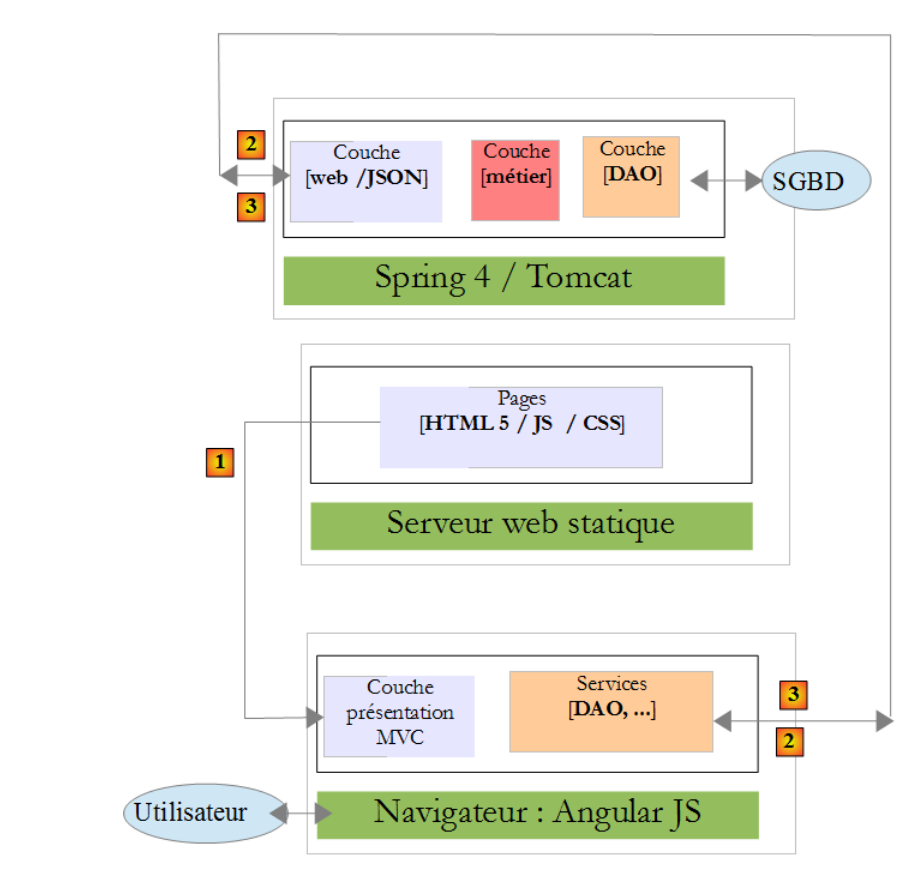
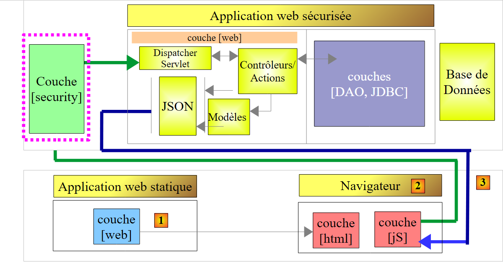
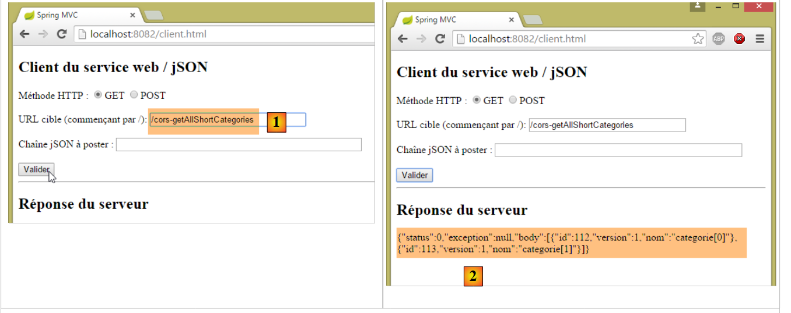
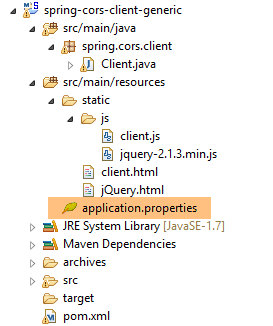
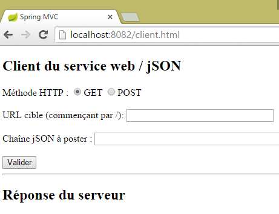
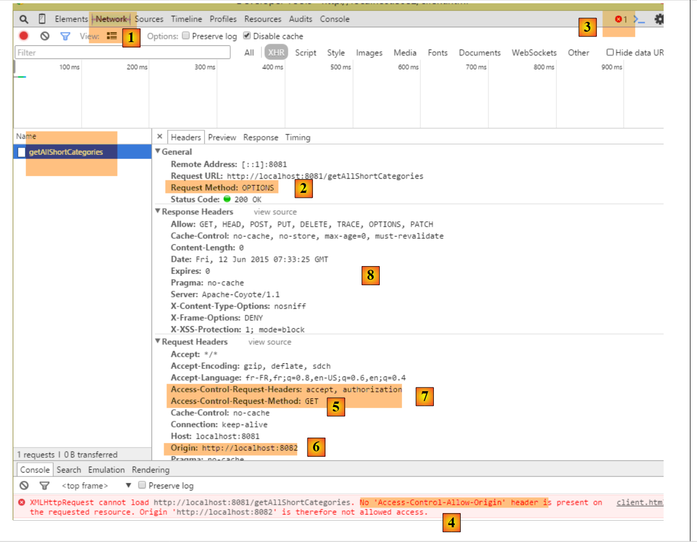
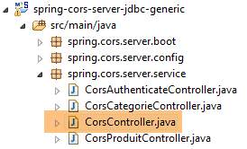
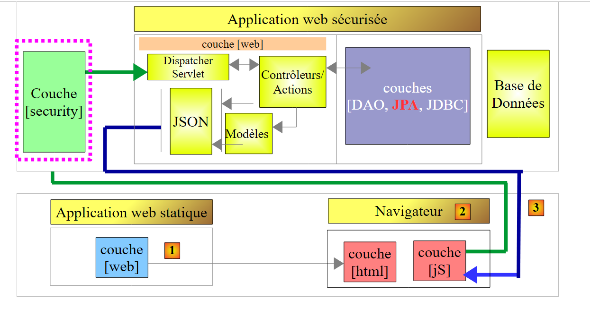
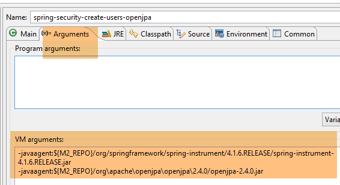
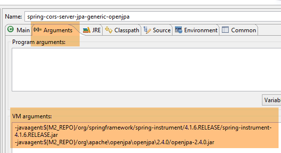

21. Domänenübergreifende Zugriffsverwaltung
21.1. Architektur
Wir werden uns nun mit dem Thema domänenübergreifende Anfragen befassen. Im Dokument [AngularJS / Spring 4 Tutorial] entwickeln wir eine Client-Server-Anwendung, bei der der Client eine AngularJS-Anwendung ist:
 |
- Die HTML-/CSS-/JS-Seiten der Angular-Anwendung stammen vom Server [1];
- in [2] sendet der [dao]-Dienst eine Anfrage an einen anderen Server, Server [2]. Dies wird jedoch vom Browser, auf dem die Angular-Anwendung läuft, unterbunden, da es sich um eine Sicherheitslücke handelt. Die Anwendung kann nur den Server abfragen, von dem sie stammt, d. h. Server [1];
Tatsächlich ist es unzutreffend zu sagen, dass der Browser die Angular-Anwendung daran hindert, Server [2] abzufragen. Der Browser fragt tatsächlich Server [2] ab, um festzustellen, ob dieser es einem Client erlaubt, der nicht aus seiner eigenen Domäne stammt, ihn abzufragen. Diese Technik der gemeinsamen Nutzung wird als CORS (Cross-Origin Resource Sharing) bezeichnet. Server [2] erteilt die Erlaubnis, indem er bestimmte HTTP-Header sendet.
Um die Probleme zu veranschaulichen, die auftreten können, erstellen wir eine Client-Server-Anwendung, bei der:
- der Server unser sicherer Web-/JSON-Server ist;
- der Client eine einfache HTML-Seite ist, die mit JavaScript-Code ausgestattet ist, der Anfragen an den Web-/JSON-Server stellt;
Wir werden die folgende Architektur implementieren:
 |
- In [1] liefert eine Webanwendung HTML/JS-Seiten;
- in [2] führt der Browser das in die HTML-Seiten eingebettete JavaScript aus, um den sicheren Webdienst [3] abzufragen;
21.2. Das Projekt [spring-cors-server-jdbc-generic]
21.2.1. Einrichten der Entwicklungsumgebung
 |
- Laden Sie die oben aufgeführten Projekte herunter. Die [spring-cors-*]-Projekte finden Sie im Ordner [<examples>\spring-database-generic\spring-cors];
- Drücken Sie Alt-F5 und erstellen Sie alle Maven-Projekte neu;
Führen Sie anschließend die Laufkonfiguration mit dem Namen [spring-cors-server-jdbc-generic] aus (die MySQL-Datenbank muss laufen), wodurch ein Webdienst auf Port 8081 gestartet wird:
 |
Füllen Sie die Datenbank [dbproduitscategories] mithilfe der Laufzeitkonfiguration [spring-jdbc-generic-04-fillDataBase]:
 |
Führen Sie die Laufzeitkonfiguration namens [spring-cors-client-generic] aus, die eine zweite Webanwendung (auf einer anderen Tomcat-Instanz) auf Port 8082 startet:
 |
Rufen Sie über einen Browser die URL [http://localhost:8082/client.html] auf:
 |
- In [1] rufen wir die Kurzversion aller Kategorien ab;
- in [2] die JSON-Antwort des Servers;
21.2.2. Das Client-Projekt [spring-cors-client-generic]
 |
 |
In der Datei [application.properties] können wir den Port für die Client-Webanwendung festlegen. Der Inhalt lautet wie folgt:
server.port=8082
Somit:
- ist der Client eine Webanwendung, die unter der URL [http://localhost:8082] erreichbar ist;
- der Server ist eine Webanwendung, die unter der URL [http://localhost:8081] erreichbar ist;
Da der Zugriff auf den Client nicht über denselben Port wie auf den Server erfolgt, stellt sich das Problem der domänenübergreifenden Anfragen. Tatsächlich sind [http://localhost:8081] und [http://localhost:8082] zwei verschiedene Domänen.
21.2.3. Maven-Konfiguration
Das Projekt ist ein Maven-Projekt mit der folgenden [pom.xml]-Datei:
<?xml version="1.0" encoding="UTF-8"?>
<project xmlns="http://maven.apache.org/POM/4.0.0" xmlns:xsi="http://www.w3.org/2001/XMLSchema-instance"
xsi:schemaLocation="http://maven.apache.org/POM/4.0.0 http://maven.apache.org/xsd/maven-4.0.0.xsd">
<modelVersion>4.0.0</modelVersion>
<groupId>dvp.spring.database</groupId>
<artifactId>spring-cors-client-generic</artifactId>
<version>0.0.1-SNAPSHOT</version>
<packaging>jar</packaging>
<name>spring-cors-client-generic</name>
<description>Client cors for webjson server</description>
<parent>
<groupId>org.springframework.boot</groupId>
<artifactId>spring-boot-starter-parent</artifactId>
<version>1.2.3.RELEASE</version>
<relativePath /> <!-- lookup parent from repository -->
</parent>
<properties>
<project.build.sourceEncoding>UTF-8</project.build.sourceEncoding>
<java.version>1.7</java.version>
</properties>
<dependencies>
<dependency>
<groupId>org.springframework.boot</groupId>
<artifactId>spring-boot-starter-web</artifactId>
</dependency>
</dependencies>
<!-- plugins -->
<build>
<plugins>
<plugin>
<groupId>org.springframework.boot</groupId>
<artifactId>spring-boot-maven-plugin</artifactId>
</plugin>
<plugin>
<artifactId>maven-assembly-plugin</artifactId>
<configuration>
<descriptorRefs>
<descriptorRef>jar-with-dependencies</descriptorRef>
</descriptorRefs>
</configuration>
</plugin>
<plugin>
<groupId>org.apache.maven.plugins</groupId>
<artifactId>maven-surefire-plugin</artifactId>
<version>2.18.1</version>
</plugin>
</plugins>
</build>
</project>
- Zeilen 14–19: Dies ist ein Spring-Boot-Projekt;
- Zeilen 27–30: Wir verwenden die Abhängigkeit [spring-boot-starter-web], die einen Tomcat-Server und Spring MVC enthält;
21.2.4. Grundlagen von jQuery und JavaScript
 |
Die Webanwendung liefert die folgende einzelne Seite:
 |
Es enthält JavaScript-Code (JS), der im Browser ausgeführt wird. Wir werden einige JavaScript-Grundlagen behandeln, um den Code besser zu verstehen. Der Client wird HTTP-Anfragen mithilfe der jQuery-Bibliothek [https://jquery.com/] stellen, die viele Funktionen bereitstellt, die die JavaScript-Entwicklung vereinfachen. Wir erstellen eine statische HTML-Datei [jQuery.html] und legen sie im Ordner [static] ab:
 |
Diese Datei hat folgenden Inhalt:
<!DOCTYPE html>
<html xmlns="http://www.w3.org/1999/xhtml">
<head>
<meta http-equiv="Content-Type" content="text/html; charset=utf-8" />
<title>JQuery-01</title>
<script type="text/javascript" src="/js/jquery-2.1.3.min.js"></script>
</head>
<body>
<h3>Rudiments de JQuery</h3>
<div id="element1">
Elément 1
</div>
</body>
</html>
- Zeile 6: jQuery wird importiert;
- Zeilen 10–12: ein Seitenelement mit der ID [element1]. Wir werden mit diesem Element arbeiten.
Wir müssen die Datei [jquery-2.1.3.min.js] herunterladen. Die neueste Version von jQuery finden Sie unter der URL [http://jquery.com/download/]:

Wir legen die heruntergeladene Datei im Ordner [static/js] ab:
|
Sobald das erledigt ist, öffne die statische Ansicht [jQuery.html] in Chrome [1-2]:
 |
Drücke in Google Chrome [Strg-Umschalt-I], um die Entwicklertools zu öffnen [3]. Über die Registerkarte [Konsole] [4] kannst du JavaScript-Code ausführen. Nachfolgend findest du JavaScript-Befehle, die du eingeben kannst, sowie Erläuterungen zu ihrer Funktion.
|
: gibt die Sammlung aller Elemente mit der ID [element1], also normalerweise eine Sammlung von 0 oder 1 Element, da es auf einer HTML-Seite nicht zwei identische IDs auf einer HTML-Seite haben. |  |
|
: Weist allen Elementen in der Sammlung den Text [blabla] zu Sammlung zu. Dies ändert den auf der Seite angezeigten Inhalt |  |
|
blendet die Elemente in der Sammlung aus. Der Text [blabla] wird nicht mehr angezeigt. |  |
|
: zeigt die Sammlung erneut an. Dies ermöglicht es uns zu sehen, dass das Element mit der ID [element1] das CSS-Attribut style='display: none;' hat, wodurch das Element ausblendet. | |
|
: zeigt die Elemente in der Sammlung an. Der Text [blabla] erscheint wieder. Es ist das style='display: block;', das diese Anzeige. |  |
|
: Setzt ein Attribut für alle Elemente in der Sammlung. Das Attribut lautet hier [style] und sein Wert [color: red]. Der Text [blabla] wird rot. |  |
 | |
 |
Beachten Sie, dass sich die URL des Browsers während all dieser Vorgänge nicht geändert hat. Es fand keine Kommunikation mit dem Webserver statt. Alles geschieht innerhalb des Browsers. Sehen wir uns nun den Quellcode der Seite an:
<!DOCTYPE html>
<html xmlns="http://www.w3.org/1999/xhtml">
<head>
<meta http-equiv="Content-Type" content="text/html; charset=utf-8" />
<title>JQuery-01</title>
<script type="text/javascript" src="/js/jquery-1.11.1.min.js"></script>
</head>
<body>
<h3>Rudiments de JQuery</h3>
<div id="element1">
Elément 1
</div>
</body>
</html>
Dies ist der Originaltext. Er spiegelt nicht die Änderungen wider, die in den Zeilen 10–12 am Element vorgenommen wurden. Es ist wichtig, dies beim Debuggen von JavaScript zu beachten. In solchen Fällen ist es oft nicht notwendig, den Quellcode der angezeigten Seite einzusehen.
21.2.5. Der JavaScript-Code der Anwendung
Kehren wir zum HTML-Code der Client-Anwendungsseite zurück, die den Webdienst / JSON abfragen wird:
<!DOCTYPE html>
<html>
<head>
<meta charset="UTF-8">
<title>Spring MVC</title>
<script type="text/javascript" src="/js/jquery-2.1.1.min.js"></script>
<script type="text/javascript" src="/js/client.js"></script>
</head>
<body>
<h2>Client du service web / jSON</h2>
<form id="formulaire">
<!-- method HTTP -->
Méthode HTTP :
<!-- -->
<input type="radio" id="get" name="method" value="get" checked="checked" />GET
<!-- -->
<input type="radio" id="post" name="method" value="post" />POST
<!-- URL -->
<br /> <br />URL cible : <input type="text" id="url" size="30"><br />
<!-- posted value -->
<br /> Chaîne jSON à poster : <input type="text" id="posted" size="50" />
<!-- validation button -->
<br /> <br /> <input type="submit" value="Valider" onclick="javascript:requestServer(); return false;"></input>
</form>
<hr />
<h2>Réponse du serveur</h2>
<div id="response"></div>
</body>
</html>
- Zeile 6: Wir importieren die jQuery-Bibliothek;
- Zeile 7: Wir importieren Code, den wir schreiben werden;
- Zeilen 11, 15, 17, 21: Beachten Sie die [id]-Bezeichner der Seitenkomponenten. Das JavaScript verweist über diese Bezeichner auf diese Komponenten;
Der [client.js]-Code lautet wie folgt:
// global data
var url;
var posted;
var response;
var method;
function requestServer() {
// retrieve information from the form
var urlValue = url.val();
var postedValue = posted.val();
method = document.forms[0].elements['method'].value;
// make a manual Ajax call
if (method === "get") {
doGet(urlValue);
} else {
doPost(urlValue, postedValue);
}
}
function doGet(url) {
// make a manual Ajax call
$.ajax({
headers : {
'Authorization' : 'Basic YWRtaW46YWRtaW4='
},
url : 'http://localhost:8081' + url,
type : 'GET',
dataType : 'tex/plain',
beforeSend : function() {
},
success : function(data) {
// text result
response.text(data);
},
complete : function() {
},
error : function(jqXHR) {
// system error
response.text(jqXHR.responseText);
}
})
}
function doPost(url, posted) {
// make a manual Ajax call
$.ajax({
headers : {
'Authorization' : 'Basic YWRtaW46YWRtaW4='
},
url : 'http://localhost:8081 ' + url,
type : 'POST',
contentType : 'application/json',
data : posted,
dataType : 'tex/plain',
beforeSend : function() {
},
success : function(data) {
// text result
response.text(data);
},
complete : function() {
},
error : function(jqXHR) {
// system error
response.text(jqXHR.responseText);
}
})
}
// document loading
$(document).ready(function() {
// retrieve page component references
url = $("#url");
posted = $("#posted");
response = $("#response");
});
- Zeilen 71–75: JavaScript-Code, der ausgeführt wird, nachdem das Dokument im Browser vollständig geladen wurde;
- Zeilen 73–75: Ruft die Referenzen von drei Elementen im HTML-Dokument ab;
- Zeilen 2–5: Globale Variablen, die in allen in der JavaScript-Datei definierten Funktionen bekannt sind;
- Zeile 9: Ruft die vom Benutzer eingegebene URL ab;
- Zeile 10: Ruft den Wert ab, den der Benutzer senden möchte;
- Zeile 11: Ruft die Methode [get] oder [post] ab, die bei der Anfrage der URL aus Zeile 9 verwendet werden soll:
- document bezieht sich auf das vom Browser geladene Dokument, bekannt als DOM (Document Object Model),
- document.forms[0] bezieht sich auf das erste Formular im Dokument; ein Dokument kann mehrere Formulare enthalten. Hier gibt es nur eines;
- document.forms[0].elements['method'] bezieht sich auf das Formularelement mit dem Attribut [name='method']. Es gibt zwei:
<input type="radio" id="get" name="method" value="get" checked="checked" />GET
<input type="radio" id="post" name="method" value="post" />POST
- (Fortsetzung)
- document.forms[0].elements['method'].value ist der Wert, der für die Komponente mit dem Attribut [name='method'] gesendet wird. Wir wissen, dass der gesendete Wert dem Wert des Attributs [value] des ausgewählten Optionsfelds entspricht. Hier handelt es sich also um eine der Zeichenfolgen ['get', 'post'];
- Zeilen 13–18: Je nach der zu verwendenden HTTP-Methode wird entweder die Methode [doGet] oder [doPost] ausgeführt;
- Die jQuery-Methode [$.ajax] führt eine HTTP-Anfrage durch;
- Zeilen 23–25: Wir kommunizieren mit einem Server, der einen HTTP-Header [Authorization: Basic code] erfordert. Wir erstellen diesen Header für den Benutzer [admin / admin], der als Einziger berechtigt ist, den Server abzufragen;
- Zeile 26: Der Benutzer gibt URLs der Form [/getAllLongCategories, /saveCategories, ...] ein. Diese URLs müssen daher vervollständigt werden;
- Zeile 27: Zu verwendende HTTP-Methode;
- Zeile 28: Der Server gibt JSON zurück. Wir geben den Typ [text/plain] als Antworttyp an, damit die Antwort genau so angezeigt wird, wie sie empfangen wurde;
- Zeile 33: Anzeige der Textantwort des Servers;
- Zeile 39: Anzeige etwaiger Fehlermeldungen im Textformat;
- Zeile 44: Die Methode [doPost] erhält einen zweiten Parameter, nämlich den zu übermittelnden Wert;
- Zeile 52: Angabe, dass der gesendete Wert in Form einer JSON-Zeichenkette vorliegt;
21.2.6. Ausführung auf dem Client
Die Client-Anwendung ist eine Konsolenanwendung, die von der folgenden ausführbaren [Client]-Klasse gestartet wird:
 |
package spring.cors.client;
import org.springframework.boot.SpringApplication;
import org.springframework.boot.autoconfigure.EnableAutoConfiguration;
@EnableAutoConfiguration
public class Client {
public static void main(String[] args) {
SpringApplication.run(Client.class, args);
}
}
- Zeile 6: Die Annotation [@EnableAutoConfiguration] ist eine Annotation des [Spring Boot]-Projekts (Zeile 4). Spring Boot überprüft die im Klassenpfad des Projekts vorhandenen Archive. In diesem Fall sind dies alle Maven-Abhängigkeiten, die von der einzigen Abhängigkeit in der Datei [pom.xml] bereitgestellt werden:
<dependencies>
<dependency>
<groupId>org.springframework.boot</groupId>
<artifactId>spring-boot-starter-web</artifactId>
</dependency>
</dependencies>
Diese Abhängigkeit umfasst eine Vielzahl von Bibliotheken, insbesondere Spring MVC und einen Tomcat-Server. Aufgrund dieser Abhängigkeiten konfiguriert Spring Boot ein Spring-MVC-Projekt, das auf Tomcat läuft, unter Verwendung der Standardwerte. Der Tomcat-Server wird dann so konfiguriert, dass er auf Port 8080 läuft. Wenn Sie die von Spring Boot gewählten Standardwerte überschreiben möchten, können Sie die Datei [application.properties] im Stammverzeichnis des Klassenpfads verwenden (alles in [src/main/resources] befindet sich im Stammverzeichnis des Klassenpfads):
 |
Wir legen wie folgt fest, dass der Tomcat-Server auf Port 8082 laufen soll:
server.port=8082
Eine Liste der Parameter, die in [application.properties] verwendet werden können, ist unter der URL (Stand: Juni 2015) [http://docs.spring.io/spring-boot/docs/current/reference/html/common-application-properties.html] verfügbar;
Zurück zum Code in [Client.java]:
- Zeile 10: Die Methode [SpringApplication.run] stellt die Seite [client.html] auf dem Tomcat-Server bereit, der sich im Klassenpfad des Projekts befindet;
21.2.7. Die URL [/getAllShortCategories]
 |
Wir starten:
- den sicheren Web-/JSON-Server auf Port 8081 (Konfiguration [spring-security-server-jdbc-generic]);
- den Client für diesen Server auf Port 8082 (Konfiguration [spring-cors-client-generic]);
dann rufen wir die URL [http://localhost:8082/client.html] [1] auf:
 |
- In [2] führen wir eine GET-Anfrage an die URL [http://localhost:8081/getAllShortCategories] durch;
Wir erhalten keine Antwort vom Server. Wenn wir uns die Chrome-Entwicklerkonsole (Strg-Umschalt-I) ansehen, wird ein Fehler angezeigt:
 |
- In [1] befinden wir uns auf der Registerkarte [Netzwerk];
- In [2] sehen wir, dass die gesendete HTTP-Anfrage nicht [GET], sondern [OPTIONS] ist. Bei einer domänenübergreifenden Anfrage überprüft der Browser durch Senden einer HTTP-[OPTIONS]-Anfrage beim Server, ob bestimmte Bedingungen erfüllt sind. In diesem Fall sind dies die durch die Punkte [5-6] gekennzeichneten Anfragen;
- In [5] fragt der Browser, ob die Ziel-URL mit einem GET erreicht werden kann. Die [Access-Control-Request-Method]-Anfrage fordert eine Antwort mit einem [Access-Control-Allow-Methods]-HTTP-Header an, der angibt, dass die angeforderte Methode akzeptiert wird;
- In [6] sendet der Browser den HTTP-Header [Origin: http://localhost:8081]. Dieser Header fordert eine Antwort in einem HTTP-Header [Access-Control-Allow-Origin] an, der angibt, dass die angegebene Herkunft akzeptiert wird;
- In [7] fragt der Browser ab, ob die HTTP-Header [Accept] und [Authorization] akzeptiert werden. Die Anfrage [Access-Control-Request-Headers] erwartet eine Antwort mit einem HTTP-Header [Access-Control-Allow-Headers], der angibt, dass die angeforderten Header akzeptiert werden;
- In [3] tritt ein Fehler auf. Ein Klick auf das Symbol führt zu Fehler [4];
- In [4] weist die Meldung darauf hin, dass der Server den HTTP-Header [Access-Control-Allow-Origin] nicht gesendet hat, der angibt, ob die Herkunft der Anfrage akzeptiert wird;
- in [8] sehen wir, dass der Server diesen Header tatsächlich nicht gesendet hat. Infolgedessen hat der Browser die ursprünglich angeforderte HTTP-GET-Anfrage abgelehnt;
Wir müssen den Webserver / JSON anpassen.
21.2.8. Ein neuer Webdienst / JSON
Wir erstellen ein neues Maven-Projekt [spring-cors-server-jdbc-generic]:
 |
Die Maven-Konfiguration für den neuen Webdienst lautet wie folgt:
<project xmlns="http://maven.apache.org/POM/4.0.0" xmlns:xsi="http://www.w3.org/2001/XMLSchema-instance"
xsi:schemaLocation="http://maven.apache.org/POM/4.0.0 http://maven.apache.org/xsd/maven-4.0.0.xsd">
<modelVersion>4.0.0</modelVersion>
<groupId>dvp.spring.database</groupId>
<artifactId>spring-cors-server-jdbc-generic</artifactId>
<version>0.0.1-SNAPSHOT</version>
<name>spring-cors-server-jdbc-generic</name>
<description>démo spring cors</description>
<parent>
<groupId>org.springframework.boot</groupId>
<artifactId>spring-boot-starter-parent</artifactId>
<version>1.2.3.RELEASE</version>
</parent>
<!-- plugins -->
<build>
<plugins>
<plugin>
<groupId>org.apache.maven.plugins</groupId>
<artifactId>maven-surefire-plugin</artifactId>
<version>2.18.1</version>
</plugin>
</plugins>
</build>
<dependencies>
<dependency>
<groupId>dvp.spring.database</groupId>
<artifactId>spring-security-server-jdbc-generic</artifactId>
<version>0.0.1-SNAPSHOT</version>
</dependency>
</dependencies>
</project>
- Zeilen 30–32: Wir rufen alle Daten aus der bisherigen Arbeit ab, indem wir auf das sichere JSON-Archiv auf dem Webserver zugreifen;
Letztendlich sehen die Abhängigkeiten wie folgt aus:
 |
Die Konfigurationsklasse [AppConfig] sieht wie folgt aus:
 |
package spring.cors.server.config;
import javax.annotation.PostConstruct;
import org.springframework.beans.factory.annotation.Autowired;
import org.springframework.context.annotation.Bean;
import org.springframework.context.annotation.ComponentScan;
import org.springframework.context.annotation.Configuration;
import org.springframework.context.annotation.Import;
import org.springframework.web.servlet.DispatcherServlet;
@Configuration
@ComponentScan(basePackages = { "spring.cors.server.service" })
@Import({ spring.security.config.AppConfig.class })
public class AppConfig {
// cross-domain queries
@Bean
public boolean isCorsEnabled() {
return true;
}
...
}
- Zeile 12: Die Klasse ist eine Spring-Konfigurationsklasse;
- Zeile 9: Weitere Spring-Komponenten finden sich im Paket [spring.cors.server.service];
- Zeile 14: Wir importieren die Beans aus dem Projekt [spring-security-server-jdbc-generic];
- Zeilen 18–21: Wir erstellen eine Spring-Komponente namens [isCorsEnabled], die angibt, ob Clients außerhalb der Domäne des Servers akzeptiert werden oder nicht;
21.2.9. Die Controller
Der neue Webdienst verfügt über vier Controller:
 |
- [CorsCategorieController] verarbeitet URLs für Kategorien. Er verwaltet ausschließlich CORS-Header von Web-Clients. Ansonsten delegiert er die Arbeit an den [CategorieController] in der Abhängigkeit [spring-webjson-server-jdbc-generic];
- [CorsProductController] und [CorsAuthenticateController] verfahren ebenso, indem sie die Arbeit an den [ProductController] in der Abhängigkeit [spring-webjson-server-jdbc-generic] und den [AuthenticateController] in der Abhängigkeit [spring-security-server-jdbc-generic] delegieren;
- [CorsController] wird verwendet, um die Gemeinsamkeiten der drei vorherigen Controller herauszulösen;
21.2.9.1. Der [CorsController]
Die Klasse [CorsController] sieht wie folgt aus:
package spring.cors.server.service;
import javax.servlet.http.HttpServletResponse;
import org.springframework.beans.factory.annotation.Autowired;
import org.springframework.stereotype.Component;
@Component
public class CorsController {
@Autowired
private boolean isCorsEnabled;
// sending options to the customer
public void sendOptions(String origin, HttpServletResponse response) {
// Cors allowed ?
if (!isCorsEnabled || origin == null || !origin.startsWith("http://localhost")) {
return;
}
// set header CORS
response.addHeader("Access-Control-Allow-Origin", origin);
// certain headers are allowed
response.addHeader("Access-Control-Allow-Headers", "accept, authorization");
// we authorize GET
response.addHeader("Access-Control-Allow-Methods", "GET");
}
}
- Zeile 8: Die Klasse [CorsController] ist ein Spring-Controller;
- Zeilen 11–12: Einbindung des Beans [isCorsEnabled], der angibt, ob CORS-Header verarbeitet werden sollen oder nicht;
- Zeilen 15–26: Die Methode [sendOptions] verarbeitet Antworten an Clients, die CORS-Header senden;
- Zeilen 17–19: Wenn die Anwendung so konfiguriert ist, dass sie domänenübergreifende Anfragen akzeptiert, und wenn der Absender den HTTP-Header [Origin] gesendet hat und dieser Ursprung mit [http://localhost] beginnt, wird die domänenübergreifende Anfrage akzeptiert; andernfalls wird sie abgelehnt;
- Zeile 21: Befindet sich der Client in der Domäne [http://localhost:port], senden wir den HTTP-Header:
Access-Control-Allow-Origin: http://localhost:port
was bedeutet, dass der Server die Herkunft des Clients akzeptiert;
- Zeilen 22–25: Wir haben in der [OPTIONS]-HTTP-Anfrage zwei spezifische HTTP-Header angegeben:
Als Antwort auf den HTTP-Header [Access-Control-Request-X] sendet der Server einen HTTP-Header [Access-Control-Allow-X] zurück, der angibt, was erlaubt ist. Die Zeilen 22–25 wiederholen lediglich die Anfrage des Clients, um anzuzeigen, dass sie akzeptiert wurde;
21.2.9.2. Der Controller [CorsCategorieController]
package spring.cors.server.service;
import java.util.List;
import javax.servlet.http.HttpServletRequest;
import javax.servlet.http.HttpServletResponse;
import org.springframework.beans.factory.annotation.Autowired;
import org.springframework.web.bind.annotation.RequestHeader;
import org.springframework.web.bind.annotation.RequestMapping;
import org.springframework.web.bind.annotation.RequestMethod;
import org.springframework.web.bind.annotation.RestController;
import spring.jdbc.entities.Categorie;
import spring.webjson.server.entities.CoreCategorie;
import spring.webjson.server.service.CategorieController;
import spring.webjson.server.service.Response;
@RestController
public class CorsCategorieController extends CorsController {
@Autowired
private CategorieController categorieController;
@RequestMapping(value = "/cors-getAllShortCategories", method = RequestMethod.OPTIONS)
public void corsGetAllShortCategories(@RequestHeader(value = "Origin", required = false) String origin,
HttpServletResponse response) {
sendOptions(origin, response);
}
@RequestMapping(value = "/cors-getAllShortCategories", method = RequestMethod.GET)
public Response<List<Categorie>> getAllShortCategories(
@RequestHeader(value = "Origin", required = false) String origin, HttpServletResponse response) {
// original method
return categorieController.getAllShortCategories();
}
...
}
- Zeile 19: Die Annotation [@RestController] macht die Klasse sowohl zu einer Spring-Komponente als auch zu einem MVC-Controller, der eigene Antworten an den Client sendet;
- Zeile 20: Die Klasse [CorsCategorieController] erweitert die soeben vorgestellte Klasse [CorsController];
- Zeilen 22–23: Einbindung des Controllers [CategorieController] aus der Abhängigkeit [spring-webjson-server-jdbc-generic];
- Zeilen 25–29: Behandeln der URL [/cors-getAllShortCategories], wenn sie mit der HTTP-Methode [OPTIONS] angefordert wird. Gemäß Konvention legen wir fest, dass Web-Clients, die die URL [/U] des sicheren Webdienstes aufrufen möchten, tatsächlich die URL [/cors-U] aufrufen müssen. Der bereitgestellte Webdienst verfügt somit über zwei Arten von URLs:
- [/U]: für Nicht-Web-Clients;
- [/cors-U]: für Web-Clients;
- Zeile 25: Die Methode [/cors-getAllShortCategories] akzeptiert die folgenden Parameter:
- das Objekt [@RequestHeader(value = "Origin", required = false)], das den HTTP-Header [Origin] aus der Anfrage abruft. Dieser Header wurde vom Ursprung der Anfrage gesendet:
Wir legen fest, dass der [Origin]-HTTP-Header optional ist [required = false]. In diesem Fall hat der Parameter [String origin] den Wert null, wenn der Header fehlt. Bei [required = true], dem Standardwert, wird eine Ausnahme ausgelöst, wenn der Header fehlt. Wir wollten dieses Szenario vermeiden;
- (Fortsetzung)
- das [HttpServletResponse response]-Objekt, das an den Client zurückgegeben wird, der die Anfrage gestellt hat;
Diese beiden Parameter werden von Spring injiziert;
- Zeile 28: Wir delegieren die Bearbeitung der Anfrage an die Methode [sendOptions] der übergeordneten Klasse [CorsController];
- Zeilen 31–36: Die Methode [getAllShortCategories] verarbeitet die URL [/cors-getAllShortCategories], wenn diese mit einem GET-Request angefordert wird;
- Zeile 35: Die Arbeit wird an die Methode [CategorieController.getAllShortCategories] der Abhängigkeit [spring-webjson-server-jdbc-generic] delegiert;
Wir sind nun bereit für weitere Tests. Wir starten die neue Version des Webdienstes und stellen fest, dass das Problem weiterhin besteht. Es hat sich nichts geändert. Wenn wir in Zeile 28 oben eine Konsolenausgabe einfügen, wird diese nie angezeigt, was darauf hindeutet, dass die Methode [corsGetAllShortCategories] in Zeile 25 nie aufgerufen wird.
Nach einigen Recherchen stellen wir fest, dass Spring MVC [OPTIONS]-HTTP-Anfragen selbst mithilfe der Standardbehandlung verarbeitet. Daher antwortet immer Spring und niemals die Methode [corsGetAllShortCategories] in Zeile 25. Dieses Standardverhalten von Spring MVC kann geändert werden. Wir ändern die vorhandene [AppConfig]-Klasse:
|
package spring.cors.server.config;
import javax.annotation.PostConstruct;
import org.springframework.beans.factory.annotation.Autowired;
import org.springframework.context.annotation.Bean;
import org.springframework.context.annotation.ComponentScan;
import org.springframework.context.annotation.Configuration;
import org.springframework.context.annotation.Import;
import org.springframework.web.servlet.DispatcherServlet;
@Configuration
@ComponentScan(basePackages = { "spring.cors.server.service" })
@Import({ spring.security.config.AppConfig.class })
public class AppConfig {
// cross-domain queries
@Bean
public boolean isCorsEnabled() {
return true;
}
@Autowired
private DispatcherServlet dispatcherServlet;
@PostConstruct
public void init(){
// the application processes requests itself HTTP [OPTIONS]
dispatcherServlet.setDispatchOptionsRequest(true);
}
}
- Zeilen 23–24: Wir injizieren die Komponente [DispatcherServlet dispatcherServlet], die in der Abhängigkeit [spring-webjson-server-jdbc-generic] definiert wurde;
- Zeilen 26–30: Die Annotation [@PostConstruct] stellt sicher, dass die Methode [init] ausgeführt wird, nachdem die Klasse [AppConfig] instanziiert wurde und Spring seine Injektionen durchgeführt hat;
- Zeile 29: Wir konfigurieren das Servlet so, dass es [OPTIONS]-HTTP-Anfragen an die Anwendung weiterleitet;
Wir führen die Tests mit dieser neuen Konfiguration erneut durch. Wir erhalten das folgende Ergebnis:
 |
- In [1] sehen wir, dass zwei HTTP-Anfragen an die URL [http://localhost:8080/getAllCategories] gestellt werden;
- in [2] die [OPTIONS]-Anfrage;
- in [3] die drei HTTP-Header, die wir gerade in der Antwort des Servers konfiguriert haben;
Betrachten wir nun die zweite Behauptung:
 |
- in [1] die betreffende Anfrage;
- in [2] handelt es sich um die GET-Anfrage. Dank der ersten [OPTIONS]-Anfrage hat der Browser die angeforderten Informationen erhalten. Er führt nun die ursprünglich angeforderte [GET]-Anfrage aus;
- in [3] die Antwort des Servers;
- in [4] sendet der Server JSON;
- in [5] ist ein Fehler aufgetreten;
- in [6] die Fehlermeldung;
Es ist schwieriger zu erklären, was hier passiert ist. Die Antwort des Servers [3] ist normal [HTTP/1.1 200 OK]. Wir sollten daher über das angeforderte Dokument verfügen. Es ist möglich, dass der Server das Dokument tatsächlich gesendet hat, der Browser jedoch dessen Verwendung verhindert, da er verlangt, dass die Antwort auch für die GET-Anfrage den HTTP-Header [Access-Control-Allow-Origin:http://localhost:8081] enthält.
Wir ändern die Methode, die die GET-Anfrage für die URL [/cors-getAllShortCategories] verarbeitet:
@RequestMapping(value = "/cors-getAllShortCategories", method = RequestMethod.GET)
public Response<List<Categorie>> getAllShortCategories(
@RequestHeader(value = "Origin", required = false) String origin, HttpServletResponse response) {
// headers CORS
sendOptions(origin, response);
// original method
return categorieController.getAllShortCategories();
}
- Zeile 5: Wie bei der HTTP-[OPTIONS]-Anfrage sendet der Server die CORS-HTTP-Header für eine HTTP-[GET]-Anfrage;
Nach dieser Änderung sind die Ergebnisse wie folgt:
 |
Wir haben erfolgreich die Kurzform aller Kategorien erhalten.
21.2.9.3. Die [GET]-URLs
In den Controllern [CorsCategorieController, CorsProduitController, CorsAuthenticateController] folgt der Code für die Aktionen, die die angeforderten [GET]-URLs verarbeiten, dem Muster der Aktionen, die zuvor die URL [/cors-getAllShortArticles] verarbeitet haben. Der Leser kann den Code in den diesem Dokument beigefügten Beispielen überprüfen. Hier ist ein Beispiel für die URL [/cors-getAllLongProduits] im Controller [CorsProduitController]:
package spring.cors.server.service;
import java.util.List;
import javax.servlet.http.HttpServletRequest;
import javax.servlet.http.HttpServletResponse;
import org.springframework.beans.factory.annotation.Autowired;
import org.springframework.web.bind.annotation.RequestHeader;
import org.springframework.web.bind.annotation.RequestMapping;
import org.springframework.web.bind.annotation.RequestMethod;
import org.springframework.web.bind.annotation.RestController;
import spring.jdbc.entities.Produit;
import spring.webjson.server.entities.CoreProduit;
import spring.webjson.server.service.ProduitController;
import spring.webjson.server.service.Response;
@RestController
public class CorsProduitController extends CorsController {
@Autowired
private ProduitController produitController;
@RequestMapping(value = "/cors-getAllLongProduits", method = RequestMethod.GET)
public Response<List<Produit>> getAllLongProduits(@RequestHeader(value = "Origin", required = false) String origin,HttpServletResponse response) {
// headers CORS
sendOptions(origin, response);
// original method
return produitController.getAllLongProduits();
}
@RequestMapping(value = "/cors-getAllLongProduits", method = RequestMethod.OPTIONS)
public void corsGetAllLongProduits(@RequestHeader(value = "Origin", required = false) String origin,
HttpServletResponse response) {
sendOptions(origin, response);
}
...
}
 |
21.2.9.4. [POST]-URLs
Betrachten wir das folgende Szenario:
 |
- Wir senden einen POST [1] an die URL [2];
- in [3] den gesendeten Wert. Dies ist die JSON-Zeichenkette für eine Kategorie ohne Produkte;
- Letztendlich möchten wir eine Kategorie mit dem Namen [category[2]] erstellen;
Wir ändern an dieser Stelle noch keinen Code. Das Ergebnis sieht wie folgt aus:
 |
- In [1] wird, wie bei [GET]-Anfragen, eine [OPTIONS]-Anfrage vom Browser gestellt;
- in [2] fordert er die Zugriffsberechtigung für eine [POST]-Anfrage an. Zuvor war es [GET];
- In [3] wird die Autorisierung zum Senden der HTTP-Header [accept, authorization, content-type] angefordert. Zuvor hatten wir nur die ersten beiden Header;
- in [4] gewährt der Webdienst nicht alle angeforderten Berechtigungen, was zu Fehler [5] führt;
Wir ändern die Methode [CorsController.sendOptions] wie folgt:
public void sendOptions(String origin, HttpServletResponse response) {
// Cors allowed ?
if (!isCorsEnabled || origin == null || !origin.startsWith("http://localhost")) {
return;
}
// set header CORS
response.addHeader("Access-Control-Allow-Origin", origin);
// certain headers are allowed
response.addHeader("Access-Control-Allow-Headers", "accept, authorization, content-type");
// we authorize GET and POST
response.addHeader("Access-Control-Allow-Methods", "GET, POST");
}
}
- Zeile 9: Wir haben den HTTP-Header [Content-Type] hinzugefügt (Groß-/Kleinschreibung spielt keine Rolle);
- Zeile 11: Wir haben die HTTP-Methode [POST] hinzugefügt;
Das bedeutet, dass [POST]-Methoden genauso behandelt werden wie [GET]-Anfragen. Hier ist ein Beispiel für die URL [/cors-saveCategories] im Controller [CorsCategorieController]:
@RequestMapping(value = "/cors-saveCategories", method = RequestMethod.POST, consumes = "application/json; charset=UTF-8")
public Response<List<CoreCategorie>> saveCategories(HttpServletRequest request,
@RequestHeader(value = "Origin", required = false) String origin, HttpServletResponse response) {
// headers CORS
sendOptions(origin, response);
// original method
return categorieController.saveCategories(request);
}
@RequestMapping(value = "/cors-saveCategories", method = RequestMethod.OPTIONS)
public void corsSaveCategories(@RequestHeader(value = "Origin", required = false) String origin,
HttpServletResponse response) {
sendOptions(origin, response);
}
Nach diesen Änderungen sieht das Ergebnis wie folgt aus:
 |
Die Kategorie [categorie[2]] wurde erfolgreich zur Datenbank hinzugefügt. Das DBMS hat ihr den Primärschlüssel 226 zugewiesen. Dies kann mit der GET-Methode [/cors-getAllShortCategories] überprüft werden:
 |
21.2.10. Fazit
Unsere Anwendung unterstützt nun domänenübergreifende Anfragen. Diese können über die Konfiguration in der Klasse [AppConfig] aktiviert oder deaktiviert werden:
package spring.cors.server.config;
...
@Configuration
@ComponentScan(basePackages = { "spring.cors.server.service" })
@Import({ spring.security.config.AppConfig.class })
public class AppConfig {
// cross-domain queries
@Bean
public boolean isCorsEnabled() {
return true;
}
...
}
21.3. Das Eclipse-Projekt [spring-cors-server-jpa-generic]
Der CORS-Webservice wird nun durch das Projekt [spring-cors-server-jpa-generic] implementiert, das auf dem Projekt [spring-security-server-jpa-generic] basiert, welches den Datenbankzugriff mithilfe von Spring Data JPA verwaltet:
 |
Das Projekt [spring-cors-server-jpa-generic] wird durch Klonen des zuvor behandelten Projekts [spring-cors-server-jdbc-generic] erstellt.
 |
Als Nächstes sind zwei Änderungen vorzunehmen. Die erste betrifft die Datei [pom.xml]:
<project xmlns="http://maven.apache.org/POM/4.0.0" xmlns:xsi="http://www.w3.org/2001/XMLSchema-instance"
xsi:schemaLocation="http://maven.apache.org/POM/4.0.0 http://maven.apache.org/xsd/maven-4.0.0.xsd">
<modelVersion>4.0.0</modelVersion>
<groupId>dvp.spring.database</groupId>
<artifactId>spring-cors-server-jpa-generic</artifactId>
<version>0.0.1-SNAPSHOT</version>
<name>spring-cors-server-jpa-generic</name>
<description>démo spring cors</description>
<parent>
<groupId>org.springframework.boot</groupId>
<artifactId>spring-boot-starter-parent</artifactId>
<version>1.2.3.RELEASE</version>
</parent>
<!-- plugins -->
<build>
<plugins>
<plugin>
<groupId>org.apache.maven.plugins</groupId>
<artifactId>maven-surefire-plugin</artifactId>
<version>2.18.1</version>
</plugin>
</plugins>
</build>
<dependencies>
<dependency>
<groupId>dvp.spring.database</groupId>
<artifactId>spring-security-server-jpa-generic</artifactId>
<version>0.0.1-SNAPSHOT</version>
</dependency>
</dependencies>
</project>
- Zeilen 30–32: die Abhängigkeit vom sicheren Webdienst [spring-security-server-jpa-generic];
Letztendlich sehen die Projektabhängigkeiten wie folgt aus:
 |
Hinweis: Drücken Sie Alt-F5 und generieren Sie anschließend alle Projekte neu
Die zweite Änderung besteht darin, die Importe in den Klassen zu aktualisieren, die Fehler melden [Alt-Umschalt-O].
Das war's. Wir starten den CORS-Webdienst mit der Laufzeitkonfiguration [spring-cors-server-jpa-generic-hibernate-eclipselink]:
 |  |
Starten Sie anschließend den generischen Client:
 |
und rufen Sie über einen Browser die URL [1] mit einem GET-Request auf. In [2] sehen wir, dass die Kurzversion der zurückgegebenen Kategorien das Feld [entityType] enthält, das in der vorherigen JDBC-Version fehlte.
Wir werden nun zwei weitere CORS-Architekturen behandeln:
- CORS / JPA EclipseLink / DB2-Architektur;
- CORS/JPA-OpenJpa/Firebird-Architektur;
21.4. CORS/JPA-EclipseLink/DB2-Architektur
Wir werden die folgende Architektur implementieren:
 |
Laden Sie die folgenden Projekte:
 |
Hinweis: Drücken Sie Alt-F5 und generieren Sie alle Maven-Projekte neu.
Starten Sie die DB2-Datenbank und überprüfen Sie, ob die Datenbank [dbproduitscategories] vorhanden ist. Falls nicht, erstellen Sie sie (Abschnitt 12.1.2).
Wir erstellen Benutzer in der Datenbank [dbproduitscategories] mithilfe der Laufzeitkonfiguration [spring-security-create-users-hibernate-eclipselink]:
 |  |

Starten Sie anschließend den CORS-Webdienst unter Verwendung der Laufzeitkonfiguration mit dem Namen [spring-cors-server-jpa-generic-hibernate-eclipselink] und des dazugehörigen Clients mit dem Namen [spring-cors-client-generic]:
 |  |
Füllen Sie die Datenbank [dbproduitscategories] mit Werten unter Verwendung der Laufzeitkonfiguration [spring-jdbc-generic-04-fillDataBase]:
 |
Rufen Sie schließlich die folgende URL in einem Browser auf:
 |
21.5. CORS / JPA OpenJPA / Firebird-Architektur
Wir werden nun die folgende Architektur implementieren:
 |
Laden Sie die folgenden Projekte:
 |
Hinweis: Drücken Sie Alt-F5 und generieren Sie alle Maven-Projekte neu.
Starten Sie das Firebird-DBMS und überprüfen Sie, ob die Datenbank [dbproduitscategories] vorhanden ist. Falls nicht, erstellen Sie sie (Abschnitt 14.1.2).
Wir erstellen Benutzer in der Datenbank [dbproduitscategories] mithilfe der Laufzeitkonfiguration [spring-security-create-users-openjpa]:
 |  |

Starten Sie anschließend den CORS-Webdienst mit der Laufzeitkonfiguration namens [spring-cors-server-jpa-generic-openjpa]:
 |  |
Starten Sie den CORS-Client mit der Konfiguration [spring-cors-client-generic]:
 |
Füllen Sie die Datenbank [dbproduitscategories] mit Werten unter Verwendung der Laufzeitkonfiguration [spring-jdbc-generic-04-fillDataBase]:
|
Rufen Sie schließlich die folgende URL in einem Browser auf:
 |